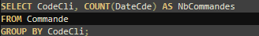
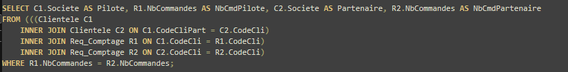
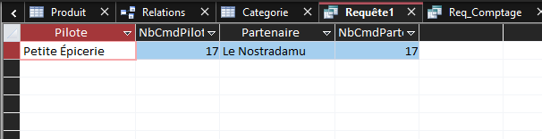

5) Dans une réflexion sur le partenariat client : A-t-on des clients pilotes d'un réseau partenaire ayant autant de commandes que les clients partenaires ?
(Faite en deux requêtes)
Requête SQL 1 (Req_Comptage) :

Requête SQL 2 (liée avec Req_Comptage) :

Résultat :
